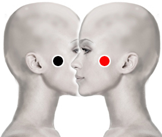

Cisticercosis
arco cigomático - arco cigomático
esófago - bulbo
retromastoides - retromastoides
píloro - lengua

Generalidades:
Síntomas: neurológicos: cefalea, mareo, somnolencia, crisis convulsivas.
La Tenia solium (solitaria) es el parásito causante de esta enfermedad.
Transmisión
Por comer carne infectada y sin cocer (cerdo). También puede darse por ingerir frutas o vegetales mal lavados o por materia fecal contaminada.
Prevención: cocer bien la carne, seguir medidas de higiene.